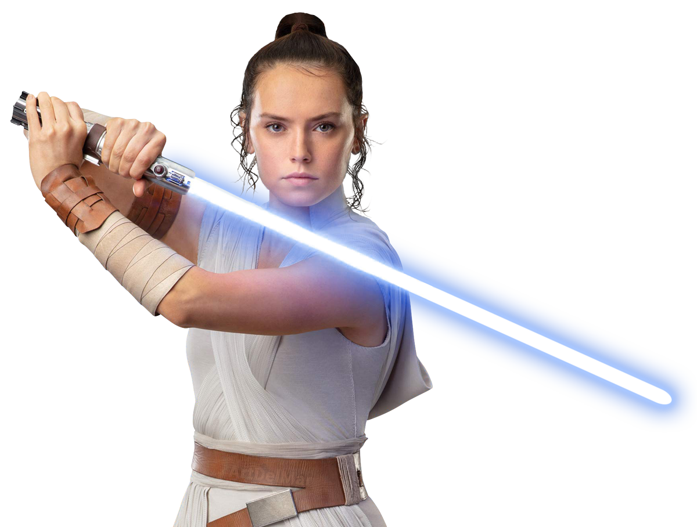
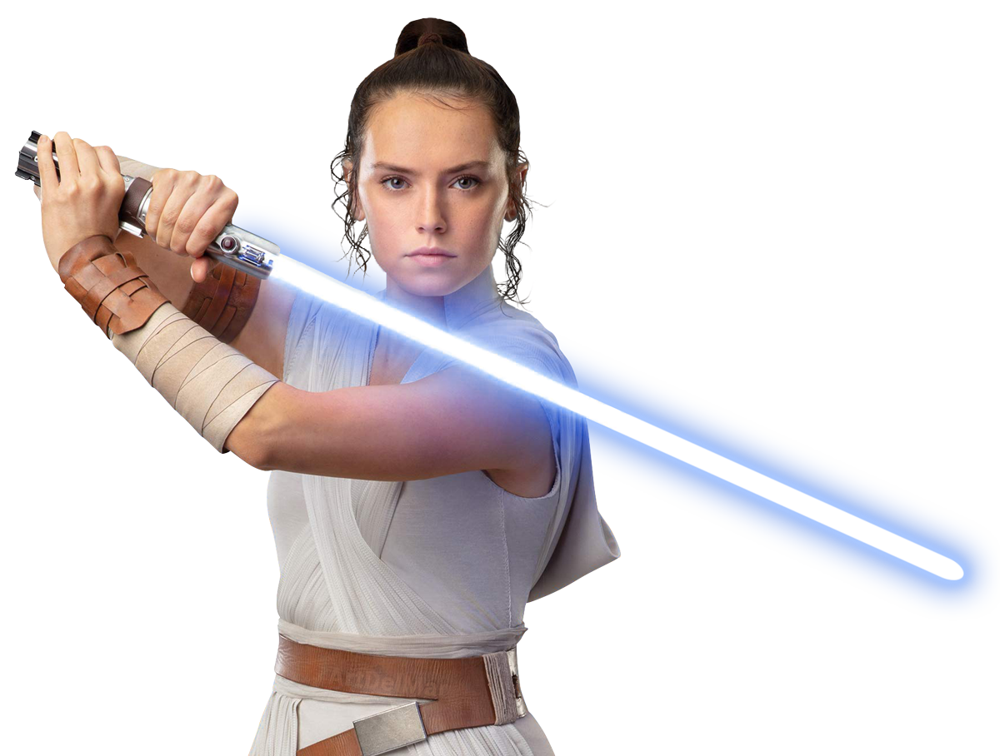

Rey is introduced as a scavenger who was abandoned on
the planet Jakku when she was a child. She becomes involved
in the Resistance's conflict with the First Order.
Powerfully Force-sensitive, Rey trains to be a Jedi under siblings
Luke Skywalker and Leia Organa, and faces adversaries such as
Kylo Ren, Supreme Leader Snoke and the resurrected Emperor Palpatine who is revealed to be her grandfather in The Rise of Skywalker.